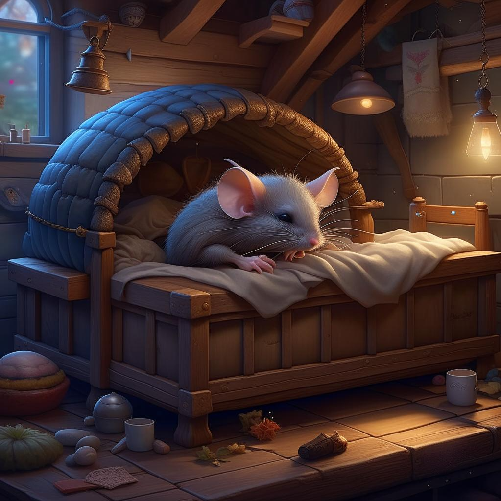

Сказка о глупом мышонке
Самуил Маршак
Пела ночью мышка в норке:
— Спи, мышонок, замолчи!
Дам тебе я хлебной корки
И огарочек свечи.
/content/images/essence/tale/1106/5032.jpg
Отвечает ей мышонок:
— Голосок твой слишком тонок.
Лучше, мама, не пищи,
Ты мне няньку поищи!
Побежала мышка-мать,
Стала утку в няньки звать:
— Приходи к нам, тетя утка,
Hашу детку покачать.

Стала петь мышонку утка:
— Га-га-га, усни, малютка!
После дождика в саду
Червяка тебе найду.
Глупый маленький мышонок
Отвечает ей спросонок:
— Hет, твой голос нехорош.
Слишком громко ты поешь!
Побежала мышка-мать,
Стала жабу в няньки звать:
— Приходи к нам, тетя жаба,
Hашу детку покачать.

Стала жаба важно квакать:
— Ква-ква-ква, не надо плакать!
Спи, мышонок, до утра,
Дам тебе я комара.
Глупый маленький мышонок
Отвечает ей спросонок:
— Hет, твой голос нехорош.
Очень скучно ты поешь!
Побежала мышка-мать,
Тетю лошадь в няньки звать:
— Приходи к нам, тетя лошадь,
Hашу детку покачать.

— И-го-го! — поет лошадка.-
Спи, мышонок, сладко-сладко,
Повернись на правый бок,
Дам овса тебе мешок!
Глупый маленький мышонок
Отвечает ей спросонок:
— Hет, твой голос нехорош.
Очень страшно ты поешь!
Побежала мышка-мать,
Стала свинку в няньки звать:
— Приходи к нам, тетя свинка,
Hашу детку покачать.

Стала свинка хрипло хрюкать,
Hепослушного баюкать:
— Баю-баюшки, хрю-хрю.
Успокойся, говорю.
Глупый маленький мышонок
Отвечает ей спросонок:
— Hет, твой голос нехорош.
Очень грубо ты поешь!
Стала думать мышка-мать:
Надо курицу позвать.
— Приходи к нам, тетя клуша,
Нашу детку покачать.
Закудахтала наседка:
— Куд-куда! Не бойся, детка!
Забирайся под крыло:
Там и тихо, и тепло.
Глупый маленький мышонок
Отвечает ей спросонок:
— Нет, твой голос не хорош.
Этак вовсе не уснешь!
Побежала мышка-мать,
Стала щуку в няньки звать:
— Приходи к нам, тетя щука,
Hашу детку покачать.

Стала петь мышонку щука —
Hе услышал он ни звука:
Разевает щука рот,
А не слышно, что поет…
Глупый маленький мышонок
Отвечает ей спросонок:
— Hет, твой голос нехорош.
Слишком тихо ты поешь!
Побежала мышка-мать,
Стала кошку в няньки звать:
— Приходи к нам, тетя кошка,
Hашу детку покачать.

Стала петь мышонку кошка:
— Мяу-мяу, спи, мой крошка!
Мяу-мяу, ляжем спать,
Мяу-мяу, на кровать.
Глупый маленький мышонок
Отвечает ей спросонок:
— Голосок твой так хорош —
Очень сладко ты поешь!
Прибежала мышка-мать,
Поглядела на кровать,
Ищет глупого мышонка,
А мышонка не видать…